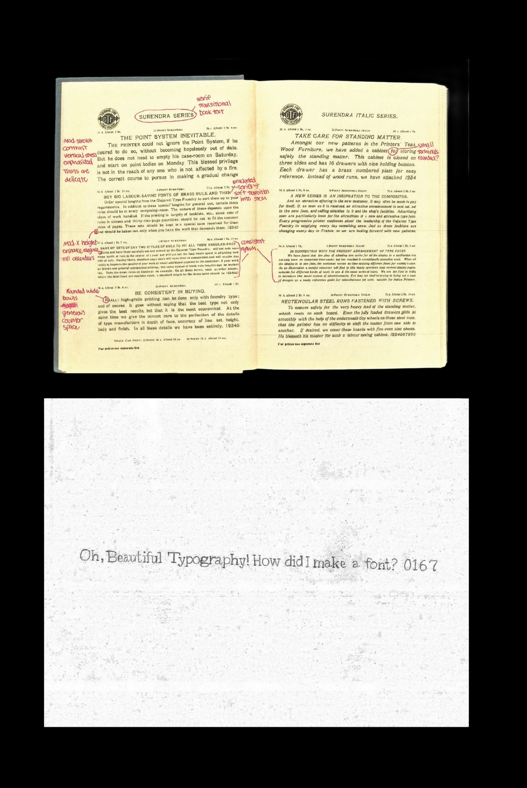
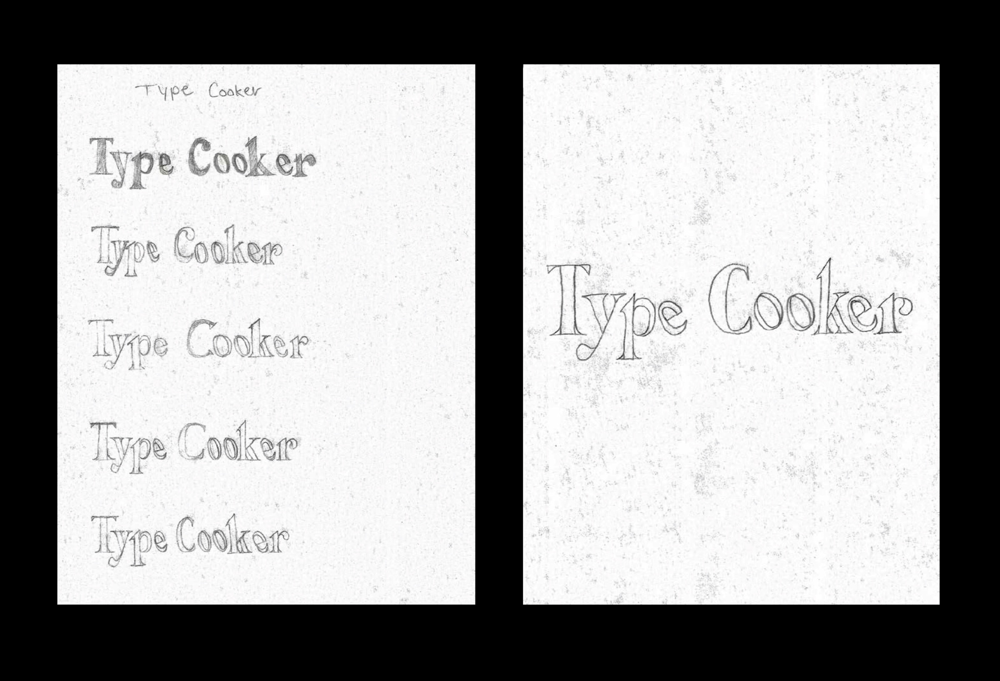

Surendra
A digital typeface drawn from historical wood and metal type, shown in a specimen poster. Every heading on this site is set in it.
- Role
- Typeface design, graphic design
- Deliverables
- Typeface, glyph set, specimen poster
Reinterpret old wood and metal type specimens as a new digital typeface, instead of just copying an archival one.
I drew the glyph set from those references, then worked through spacing, kerning and consistency across every character.
A working display face and a specimen poster that shows off its forms. It is also the voice of this whole site.
Starting from old type.
I collected wood and metal type specimens and studied what made their letters feel so physical: uneven weight, soft corners, and the way ink spreads at the edges. The goal was to borrow that character without copying any one archival face.

Drawing the glyph set.
I sketched the letterforms by hand first, then rebuilt them digitally. From there it was spacing, kerning and consistency, checking that every character belonged to the same family.
